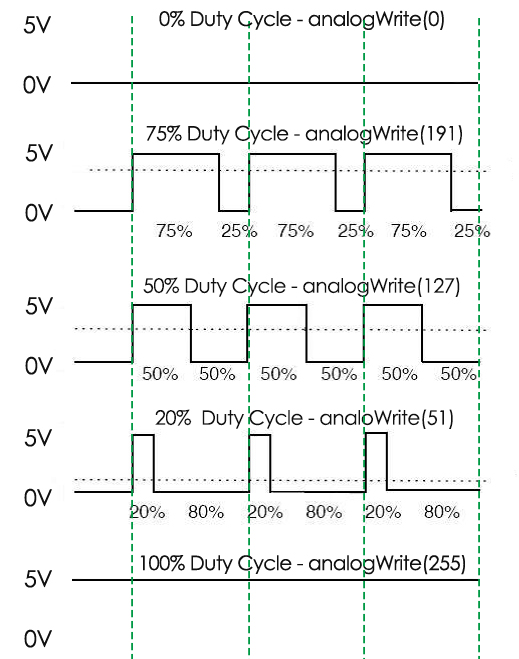

注釈
こんにちは、SunFounderのRaspberry Pi & Arduino & ESP32愛好家コミュニティへようこそ！Facebook上でRaspberry Pi、Arduino、ESP32についてもっと深く掘り下げ、他の愛好家と交流しましょう。
参加する理由は？
エキスパートサポート：コミュニティやチームの助けを借りて、販売後の問題や技術的な課題を解決します。
学び＆共有：ヒントやチュートリアルを交換してスキルを向上させましょう。
独占的なプレビュー：新製品の発表や先行プレビューに早期アクセスしましょう。
特別割引：最新製品の独占割引をお楽しみください。
祭りのプロモーションとギフト：ギフトや祝日のプロモーションに参加しましょう。
👉 私たちと一緒に探索し、創造する準備はできていますか？[ここ]をクリックして今すぐ参加しましょう！
1.1.2 RGB LED
前書き
このレッスンでは、これを使用してRGB LEDを制御し、さまざまな種類の色を点滅させる。
部品

原理
PWM
パルス幅変調（PWM）は、デジタル手段でアナログ結果を取得するための技術である。 デジタル制御は、オンとオフを切り替える信号である方形波を作成するために使用される。 このオン/オフパターンは、信号がオンになる時間と信号がオフになる時間の部分を変更することにより、完全にオン（5ボルト）である時と完全にオフ（0ボルト）である時の間の電圧をシミュレートできる。 「オンタイム」の期間はパルス幅と呼ばれる。さまざまなアナログ値を取得するには、その幅を変更または変調できる。 このオン/オフパターンを何らかのデバイス、たとえばLEDで十分に速く繰り返すと、結果は次のようになる：信号はLEDの輝度を制御する0〜5vの安定した電圧である。
デューティサイクル
デューティサイクルは、信号が有効である1周期の割合である。期間とは、信号がオンとオフのサイクルを完了するのにかかる時間である。式として、デューティサイクルは次のように表示される：

ここで、 D はデューティサイクル、 T は信号がアクティブな時間、 P は信号の合計周期です。 したがって、60％のデューティサイクルは、信号が60％の時間オンであるが、40％の時間オフであることを意味します。 60％のデューティサイクルの「定刻」は、期間の長さに応じて、数分の1秒、1日、または1週間になることもあります。
{kind=link}
RGB LED

RGB LEDの3つの原色は、輝度によってさまざまな色に混ぜることができる。 LEDの輝度はPWMで調整可能である。Raspberry PiにはハードウェアPWM出力用のチャネルが1つしかないが、RGB LEDを制御するには3つのチャネルが必要である。 つまり、Raspberry PiのハードウェアPWMでRGB LEDを制御することは困難である。 幸いなことに、softPwmライブラリはプログラミングによってPWM（softPwm）をシミュレートする。 ヘッダーファイルsoftPwm.h（C言語ユーザー向け）をインクルードし、提供されるAPIを呼び出して、マルチチャネルPWM出力によってRGB LEDを簡単に制御するだけで、あらゆる種類の色を表示できる。
回路図
R、G、およびBのピンを電流制限抵抗器に接続した後、それぞれGPIO17、GPIO18、およびGPIO27に接続してください。LEDの最も長いピン（GND）は、Raspberry Piの接地に接続する。3つのピンに異なるPWM値が与えられると、RGB LEDは異なる色を表示する。
T-Board Name |
physical |
wiringPi |
BCM |
GPIO17 |
Pin 11 |
0 |
17 |
GPIO18 |
Pin 12 |
1 |
18 |
GPIO27 |
Pin 13 |
2 |
27 |

実験手順
ステップ1: 回路を作る。

C言語ユーザー向け
ステップ2: コードのフォルダーに入る。
cd ~/davinci-kit-for-raspberry-pi/c/1.1.2/
ステップ3: コードをコンパイルする。
gcc 1.1.2_rgbLed.c -lwiringPi
注釈
命令「gcc」が実行されるときに「-o」が呼び出されない場合、EXEファイルは「a.out」と命名する。
ステップ4: EXEファイルを実行する。
sudo ./a.out
コードを実行すると、RGBが赤、緑、青、黄色、ピンク、およびシアンを表示する。
コード
#include <wiringPi.h>
#include <softPwm.h>
#include <stdio.h>
#define uchar unsigned char
#define LedPinRed 0
#define LedPinGreen 1
#define LedPinBlue 2
void ledInit(void){
softPwmCreate(LedPinRed, 0, 100);
softPwmCreate(LedPinGreen,0, 100);
softPwmCreate(LedPinBlue, 0, 100);
}
void ledColorSet(uchar r_val, uchar g_val, uchar b_val){
softPwmWrite(LedPinRed, r_val);
softPwmWrite(LedPinGreen, g_val);
softPwmWrite(LedPinBlue, b_val);
}
int main(void){
if(wiringPiSetup() == -1){ //when initialize wiring failed, printf messageto screen
printf("setup wiringPi failed !");
return 1;
}
ledInit();
while(1){
printf("Red\n");
ledColorSet(0xff,0x00,0x00); //red
delay(500);
printf("Green\n");
ledColorSet(0x00,0xff,0x00); //green
delay(500);
printf("Blue\n");
ledColorSet(0x00,0x00,0xff); //blue
delay(500);
printf("Yellow\n");
ledColorSet(0xff,0xff,0x00); //yellow
delay(500);
printf("Purple\n");
ledColorSet(0xff,0x00,0xff); //purple
delay(500);
printf("Cyan\n");
ledColorSet(0xc0,0xff,0x3e); //cyan
delay(500);
}
return 0;
}
コードの説明
#include <softPwm.h>
ソフトウェアのpwm機能を実現するために使用されるライブラリ。
void ledInit(void){
softPwmCreate(LedPinRed, 0, 100);
softPwmCreate(LedPinGreen,0, 100);
softPwmCreate(LedPinBlue, 0, 100);
}
この機能は、ソフトウェアを使用してPWMピンを作成し、その周期を0x100us〜100x100usに設定することである。
関数 softPwmCreate(LedPinRed、0、100) のプロトタイプは次のとおりである：
int softPwmCreate(int pin,int initialValue,int pwmRange);
pin: ラズベリーパイの任意のGPIOピンは、PWMピンとして設定することができます。
initialValue: 初期パルス幅はinitialValueに100usを掛けたものである。
pwmRange: PWMの周期は、pwmRangeに100usを掛けたものである。
void ledColorSet(uchar r_val, uchar g_val, uchar b_val){
softPwmWrite(LedPinRed, r_val);
softPwmWrite(LedPinGreen, g_val);
softPwmWrite(LedPinBlue, b_val);
}
この機能はLEDの色を設定する。RGBを使用すると、仮パラメータは赤の輝度の r_val 、緑の輝度の g_val 、青の輝度の b_val を表す。
関数 softPwmWrite(LedPinBlue, b_val) のプロトタイプは次のとおりである：
void softPwmWrite (int pin, int value) ;
pin: ラズベリーパイの任意のGPIOピンは、PWMピンとして設定することができます。
Value: PWMのパルス幅は、値の100usの倍数です。値は、以前に定義された pwmRange より小さく、pwmRange より大きい場合、値には固定値 pwmRange が与えられることに注意してください。
ledColorSet(0xff,0x00,0x00);
前に定義した関数を呼び出す。 LedPinRed に0xffを、 LedPinGreen と LedPinBlue に0x00を書き込む。
このコードを実行すると、赤色のLEDのみが点灯する。他の色のLEDを点灯させる場合は、パラメーターを変更するだけである。
Python言語ユーザー向け
ステップ2: コードファイルを開く。
cd ~/davinci-kit-for-raspberry-pi/python
ステップ3: 実行する。
sudo python3 1.1.2_rgbLed.py
コードを実行すると、RGBが赤、緑、青、黄色、ピンク、およびシアンを表示する。
コード
注釈
以下のコードを 変更/リセット/コピー/実行/停止 できます。 ただし、その前に、 davinci-kit-for-raspberry-pi/python のようなソースコードパスに移動する必要があります。
import RPi.GPIO as GPIO
import time
# Set up a color table in Hexadecimal
COLOR = [0xFF0000, 0x00FF00, 0x0000FF, 0xFFFF00, 0xFF00FF, 0x00FFFF]
# Set pins' channels with dictionary
pins = {'Red':17, 'Green':18, 'Blue':27}
def setup():
global p_R, p_G, p_B
# Set the GPIO modes to BCM Numbering
GPIO.setmode(GPIO.BCM)
# Set all LedPin's mode to output and initial level to High(3.3v)
for i in pins:
GPIO.setup(pins[i], GPIO.OUT, initial=GPIO.HIGH)
# Set all led as pwm channel and frequece to 2KHz
p_R = GPIO.PWM(pins['Red'], 2000)
p_G = GPIO.PWM(pins['Green'], 2000)
p_B = GPIO.PWM(pins['Blue'], 2000)
# Set all begin with value 0
p_R.start(0)
p_G.start(0)
p_B.start(0)
# Define a MAP function for mapping values. Like from 0~255 to 0~100
def MAP(x, in_min, in_max, out_min, out_max):
return (x - in_min) * (out_max - out_min) / (in_max - in_min) + out_min
# Define a function to set up colors
# input color should be Hexadecimal with
# red value, blue value, green value.
def setColor(color):
# configures the three LEDs' luminance with the inputted color value .
# Devide colors from 'color' veriable
R_val = (color & 0xFF0000) >> 16
G_val = (color & 0x00FF00) >> 8
B_val = (color & 0x0000FF) >> 0
# these three lines are used for analyzing the col variables
# assign the first two values of the hexadecimal to R, the middle two assigned to G
# assign the last two values to B, please refer to the shift operation of the hexadecimal for details.
# Map color value from 0~255 to 0~100
R_val = MAP(R_val, 0, 255, 0, 100)
G_val = MAP(G_val, 0, 255, 0, 100)
B_val = MAP(B_val, 0, 255, 0, 100)
# Change the colors
p_R.ChangeDutyCycle(R_val)
# Assign the mapped duty cycle value to the corresponding PWM channel to change the luminance.
p_G.ChangeDutyCycle(G_val)
p_B.ChangeDutyCycle(B_val)
print ("color_msg: R_val = %s, G_val = %s, B_val = %s"%(R_val, G_val, B_val))
def main():
while True:
for color in COLOR:# Assign every item in the COLOR list to the color respectively and change the color of the RGB LED via the setColor() function.
setColor(color)# change the color of the RGB LED
time.sleep(0.5)# set delay for 0.5s after each color changing. Modify this parameter will changed the LED's color changing rate.
def destroy():
# Stop all pwm channel
p_R.stop()
p_G.stop()
p_B.stop()
# Release resource
GPIO.cleanup()
# If run this script directly, do:
if __name__ == '__main__':
setup()
try:
main()
# When 'Ctrl+C' is pressed, the program
# destroy() will be executed.
except KeyboardInterrupt:
destroy()
コードの説明
p_R = GPIO.PWM(pins['Red'], 2000)
p_G = GPIO.PWM(pins['Green'], 2000)
p_B = GPIO.PWM(pins['Blue'], 2000)
p_R.start(0)
p_G.start(0)
p_B.start(0)
GPIO.PWM() 関数を呼び出して、赤、緑、青をPWMピンとして定義し、
PWMピンの周波数を2000Hzに設定してから、 Start() 関数を使用して初期デューティサイクルをゼロに設定する。
def MAP(x, in_min, in_max, out_min, out_max):
return (x - in_min) * (out_max - out_min) / (in_max - in_min) + out_min
値をマッピングするためのMAP関数を定義する。 たとえば、x = 50、in_min = 0、in_max = 255、out_min = 0、out_max = 100。 マップ関数のマッピング後、(50-0)*(100-0)/(255-0)+ 0 = 19.6を戻す。つまり、0-255の50は0-100の19.6に相当する。
def setColor(color):
R_val = (color & 0xFF0000) >> 16
G_val = (color & 0x00FF00) >> 8
B_val = (color & 0x0000FF) >> 0
入力されたカラー値で三つのLEDの輝度を構成し、16進数の最初の二つの値をR_valに割り当て、 中央の二つをG_valに割り当て、最後の二つの値をB_valに割り当てる。 たとえば、color = 0xFF00FF、R_val =(0xFF00FF&0xFF0000)>> 16 = 0xFF、G_val = 0x00、B_val = 0xFFの場合。
R_val = MAP(R_val, 0, 255, 0, 100)
G_val = MAP(G_val, 0, 255, 0, 100)
B_val = MAP(B_val, 0, 255, 0, 100)
マップ機能を使用して、0〜255のR、G、B値をPWMデューティサイクル範囲0〜100にマップする。
p_R.ChangeDutyCycle(R_val)
p_G.ChangeDutyCycle(G_val)
p_B.ChangeDutyCycle(B_val)
マッピングされたデューティサイクルを対応するPWMチャネルに割り当てて、輝度を変更する。
for color in COLOR:
setColor(color)
time.sleep(0.5)
COLORリストのすべてのアイテムをそれぞれ色に割り当て、 setColor() 関数を介してRGB LEDの色を変更する。
現象画像